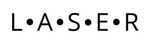

Trade Mark Journal No.2025/014 4 April 2025
UK00004148580 16 January 2025 (4,9,11,35,39)
Mark 1
Mark 2
Mark 3

- Class 4
- Electricity; electrical energy from renewable sources; gas, liquid petroleum gas, natural gas; oils, none being motor oils; fuels.
- Class 9
- Batteries; solar batteries; chargeable batteries; battery storage; power units, power packs; apparatus and instruments for accumulating and storing electricity; photovoltaic apparatus for generating electricity; solar panels, solar photovoltaic panels.
- Class 11
- Apparatus for lighting, heating, cooling, cooking, drying, ventilation, water supply and sanitary purposes; solar lighting, LED lighting; ground source heat pumps, air source heat pumps.
- Class 35
- Procurement of contracts concerning energy supply; procurement of contracts concerning water supply, drainage and sewerage services; procurement of contracts concerning telecommunications services; procurement of contracts concerning broadband services; retail services connected with the supply and sale of energy, energy from renewable sources, electricity and water; wholesale services connected with the supply and sale of energy, energy from renewable sources, electricity and water; business advisory and consultancy services in the nature of the provision of frameworks and compliant routes to enable the procurement of carbon neutral and zero carbon products and services through a variety of suppliers; procurement of renewable energy; providing business frameworks and services in the nature of providing advice on operating strategies and strategic and operational advice to deliver renewable energy solutions to a variety of business users; business advisory and consultancy services relating to the provision of carbon neutral and zero carbon services; business advisory and consultancy services relating to the provision of carbon neutral and zero carbon solutions; retail services and wholesale services connected with the sale of energy from renewable sources, gas, liquid petroleum gas, natural gas, oils, fuels, batteries, solar batteries, chargeable batteries, battery storage, power units, power packs, apparatus and instruments for accumulating and storing electricity, photovoltaic apparatus for generating electricity, solar panels, solar photovoltaic panels, apparatus for lighting, apparatus for heating, apparatus for cooling, apparatus for cooking, apparatus for drying, apparatus for ventilation, apparatus for water supply and sanitary purposes, solar lighting, LED lighting, ground source heat pumps, air source heat pumps and water.
- Class 39
- Storage, distribution and supply of electricity, energy from renewable sources, gas, water and oil.
Kent County Council
Representative: Venner Shipley LLP